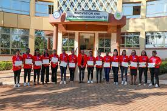

TOP HEADLINE:BCSF Y1S1 have the task to make a website as assigned by their lecture
MERU UNIVERSITY as a public institution went on strike today on date 17th september 2024 due to the following reasons:
low and delayed saries
non remittance of statutory deductions
governments failure to implement a comprehensive medical scheme likewise meru university had its 12th graduation which was just held on friday of 4th october .several parents came to witness their children graduating after having been studying for the past 4 years with consistency and with hopes that one day they shall bring tears of joy to their family even after going thrugh alot of challanges but they bared it on mind that nothing is impossible for a person who has a wish and ambutions since they knew it very well that education is the key to ajar doors though its paths are difficult but the varvest my be kind to one who had determination and consistency without giving up

this picture shows the meru club

meru university lecturers and the school workers went for srike due to delayed salarie

In a colourful ceremony marked with pomp and colour, Meru University of Science and Technology (MUST) recently celebrated the graduation of trainees who successfully completed various short courses under the sponsorship of Compassion International. The event, graced by our Vice-Chancellor 